Agent-centric-real-to-sim · 归档于 2026-11-04
Agentic Real2Sim
Agentic Real2Sim: Physics-based World Modeling with Vision-Language Agents
归档到 Agent-centric real-to-sim：VLM agents 把一条真实的机器人–物体交互录像转成 MuJoCo 里能回放的 episodic twin，再拿它造训练数据、评测 policy，正是“agent 把真实世界变成仿真”这条线。它让 VLM 只做调度、重活交给工具、关键步骤加 critic，这套设计和 Robotic harness 的 agent + tool 也是相通的。
TL;DR
- Problem
- 要把一条真实的机器人交互录像（DROID episode）变成 MuJoCo 里能回放的 twin，以前得靠人在视觉模型、mesh 清理、坐标对齐、调仿真之间手工衔接。换成一个 coding agent 一口气全包（Gemma 4 31B in Codex，60 min），3 条里也没有一条交付出可运行的 twin。
- Idea
- 先固定一个 episode contract，再让四个 VLM agent 依次接力：visual processing → physical prior → scene preparation → simulator-in-the-loop grasp optimization。VLM 只做小而有 schema 的判断；分割、重建、深度、位姿和抓取交给 SAM 3 / SAM 3D / FoundationStereo / FoundationPose / grasp sweep，关键步骤配 critic 和有限次 retry。换一个 adapter，就能转 deformable 和 humanoid。
- Result
- DROID-500 上（Gemma 4 31B）回放成功 242 条（48.4%）、部分成功 28、失败 230。100 条子集上四个 VLM 后端各成功 37–48 条，Gemma 的账单 $2.62，约为 GPT-5.4（$82.30）的 3%。6 个任务上，twin 里和真机上的 policy 成功率 Pearson r = 0.920（Fig. 4、Fig. 7）。
Problem
想把一条真机录像自动变成能回放的 MuJoCo twin：手工流程每条都要人拍板，让一个 agent 一口气全包又拼不完整
Running example · 后面每个 stage 都跟着它走
圆桌上的 bowl 和 pen（Fig. 1 的 DROID episode）。输入：同步的多路 RGBD 录像，画面里是白色圆桌上的一只 bowl 和一支 pen，右边一台 Franka 臂；另有相机标定 + 录下的机器人轨迹，任务描述可选（§III-B）。想要的输出：MuJoCo 里的一条 episodic twin，物体网格和尺度、材质和质量、相机、桌面、机器人底座都和录像对齐，按录下的轨迹再放一遍，夹爪真的抓起被操作的物体。之后这个 twin 还要能拿来造训练数据、评测 policy。
flowchart LR IN["例子输入
DROID episode
圆桌 + bowl + pen
RGBD + 标定 + 轨迹"] IN --> A1["手工接工具链
SAM 3 → SAM 3D →
FoundationPose → MuJoCo"] A1 --> AX["每条都要人拍板
物体叫什么、用哪帧、
清 mesh、对坐标系
（§I，无数字）"]:::gap IN --> B1["一个 prompt 的
coding agent
Gemma 4 31B in Codex
空环境，60 min"] B1 --> BX["拼不出能跑的 twin
XML 无效、replay 报错
3 条里 0 条（§IV-C）"]:::gap IN --> C1["自动 Real2Sim 对齐
Scalable Real2Sim
TwinAligner"] C1 --> CX["转出的不是这条录像
单个物体或新场景
轨迹、接触没保留（§II）"]:::gap
“坏在哪”标注了依据：A、C 两条来自 §I、§II 的文字，论文没有在这条 episode 上跑它们，也没给数字。B 是 §IV-C 的实验，但跑的是另外 3 条 DROID episode（Gemma + Agentic Real2Sim 能转成功的那 3 条），不是 Fig. 1 这条。
根本问题：把录像变成 twin，要在一串视觉和仿真工具之间做很多小判断：要哪些物体、用哪一帧、mask 行不行、哪个是被操作物体、哪个是地面、物体挪一点才抓得住。手工流程把这些判断留给人，单个 agent 一次全包又顾不过来（§I、§IV-C）。 这篇的切入点：固定一个 episode contract，规定每一步读写哪些文件；把每个判断切成 VLM 做得好的小问题，重活交给专用工具，关键步骤加 critic 和有限次 retry。这样对 VLM 的要求变低，开源 31B 模型就够用。
Related work
| 相关工作 | 解决什么 | 怎么解决 | 和本文的区别 |
|---|---|---|---|
| 同一问题 · 别的解法 | |||
| 一个 prompt 的 coding agent Codex + Gemma 4 31B（§IV-C baseline） | 录像 → 可运行的 twin | 空 Python 环境，给图像、轨迹、标定、机器人 asset 和统一 prompt，60 min 内自己装包、写代码 | 没有分 stage，没有专用工具和 skill，3 条里 0 条成功 → 本文给固定 stage + 工具 + critic |
| 自动 Real2Sim 对齐 Scalable Real2Sim, TwinAligner；变形物体 PhysTwin, EMPM | 从真实交互恢复仿真资产和物理参数，对齐视觉与动力学 | 机器人 pick-and-place 扫描单个物体，或为新的训练 setup 建场景 | 转换的单位是物体或新场景 → 本文的单位是一条录下的 episode，演员、物体、轨迹、接触都保留；PhysTwin/EMPM 被本文当成 deformable adapter 用 |
| Real2Sim2Real 测试平台 RoboSnap；GS soft-body 评测 [25] | 把重建的物体和场景当 policy 的仿真测试床 | 重建场景；RoboSnap 的前景物体 + 3DGS 背景分层渲染 | 重建的是场景，Fig. 3 只比了三个静态场景（外观相当，各有胜负）→ 本文以 episode 为单位，同时借用 RoboSnap 的分层渲染 |
| 相似做法 · 别的问题 | |||
| 一次性调用 VLM 的生成流水线 GRS, Holodeck, Gen2Sim, SimFoundry | 从图像或文字生成仿真场景和任务 | 在大的重建 / 任务生成流水线里调一次 VLM API | VLM 不看中间产物，出错没人管 → 本文的 agent 直接看 mask、tracking、replay 关键帧，critic 可以打回 |
| Agentic 场景 / 资产生成（本文所属） SceneSmith, SceneWeaver, PhyScensis, SimWorld Studio, LychSim, ArtiCraft | 生成 simulation-ready 的场景或 articulated asset | generate–critic–improve：VLM 在中间产物上循环，用结构化反馈补漏、改错 | 目标是把 asset 摆得像真的 → 本文沿用这个范式，还要复原录下的操作（轨迹、抓取）和物理参数（材质、质量） |
来源：论文 §I、§II Related Work 的四段，§III-A（借鉴 SimWorld Studio、ArtiCraft 的 agent / tool 分离），§IV-B（和 RoboSnap 对比），§IV-C（one-prompt baseline）。§II 的 “Visual processing and simulation tools”（SAM 3、SAM 3D、FoundationStereo、FoundationPose）是本文用到的零件，放进了 Stage 细节。未另行检索。
Level 1 · Big picture
VLM 做小决定、工具做重活：四个 agent 按固定的 episode contract 接力，把一条录像变成 MuJoCo twin
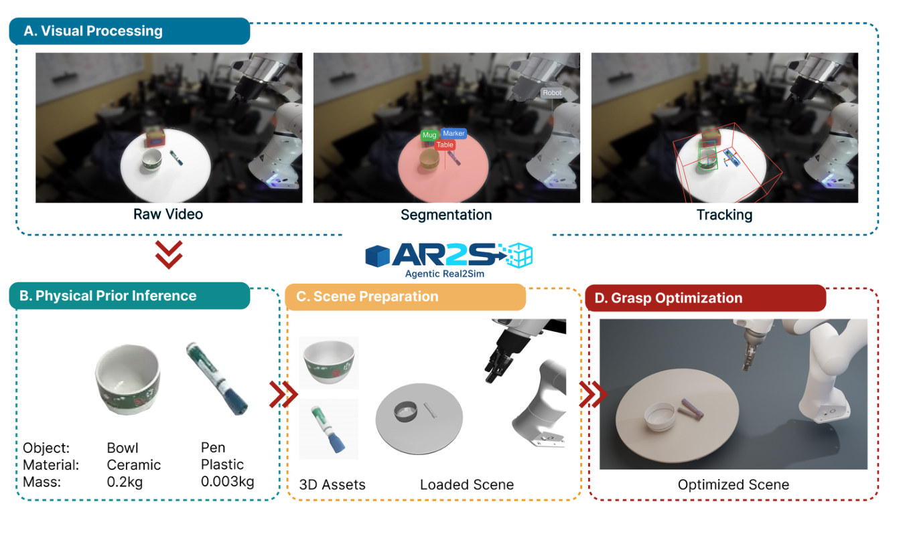
怎么读这张图
- 上栏 A. Visual Processing：Raw Video 是外置相机的一帧（白色圆桌、bowl、pen，右边是 Franka）。Segmentation 是 SAM 3 的 mask，标签由 VLM 命名：Mug（绿）、Marker（蓝）、Table（红，整块桌面）、Robot（灰）。Tracking 是 FoundationPose 跟出的 6-DoF 框。
- 左下 B. Physical Prior Inference：每个物体给一组 Object / Material / Mass，Bowl / Ceramic / 0.2kg、Pen / Plastic / 0.003kg。注意名字从 Mug、Marker 变成了 Bowl、Pen：这一步会重新判断 identity（§III-A）。
- 中下 C. Scene Preparation：左边是两个 3D Assets（SAM 3D 重建、带纹理的 bowl 和 pen），右边 Loaded Scene 是桌面、bowl、pen 和 Franka 已经装进 MuJoCo 的样子（未贴图）。
- 右下 D. Grasp Optimization：Optimized Scene 是在仿真里试过一批物体微小平移后留下的摆放：夹爪按录下的轨迹下来，能抓住被操作的物体。
- 红色 »» 箭头：A → B → C → D 就是四个 agent 的先后顺序，也就是下面 Level 2 的 Stage 1–4。
- Agent 和工具分层（§III-A）：agent 负责有歧义的判断、选 episode adapter、决定怎么精修；工具负责抽取、渲染、位姿优化、抓取优化。harness 用 LangChain，prompts / skills 和 tools 分开，VLM 后端可以换。
- Episode contract（§III-B）：每一步把结果写进固定的 episode 文件夹（meshes、scales、pose tracks、robot trajectory、camera metadata、first-frame observations、masks、task semantics），下一步只读这个文件夹。
- 想转着看 twin：项目页 Explore Simulatable Episode Twins 一节把几个 episode 做成 OpenUSD 场景，可以拖动查看（TRI、AUTOLab、PennPAL 等来源），这里嵌不了。
flowchart LR I["Input
DROID episode
RGBD + 标定 + 轨迹"] --> M["4 个 agent 按 contract 接力
VLM 做小决定
工具做重活 + critic"]:::win M --> O["Output
MuJoCo episodic twin
原轨迹回放能抓起物体"]
Level 2 · Stages
6 个 stage + 贯穿全程的 episode contract 与 critic
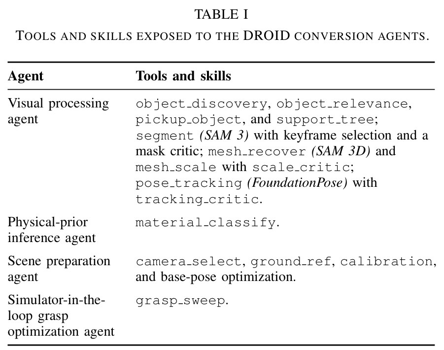
怎么读这张表
- Visual processing agent 一行最长：先是四个 VLM 判断（object_discovery、object_relevance、pickup_object、support_tree），再是三个“工具 + critic”对：segment（SAM 3）配 keyframe selection 和 mask critic，mesh_recover（SAM 3D）和 mesh_scale 配 scale_critic，pose_tracking（FoundationPose）配 tracking_critic。
- 后三行各只有一两个工具：material_classify；camera_select、ground_ref、calibration、base-pose optimization；grasp_sweep。表里没有的“渲染”和“下游”是 Stage 5、6，正文 §III-B、§IV-E 才讲。
flowchart TD S1["1 · Visual processing
Mug / Marker
Table / Robot
mesh + 6-DoF 位姿轨迹"] S2["2 · Physical prior
Bowl 陶瓷 0.2 kg
Pen 塑料 0.003 kg"] S3["3 · Scene preparation
标定、底座对齐
Table 当地面 → MuJoCo"] S4["4 · Grasp optimization
试一批物体小平移
留下抓得住的摆放"] S5["5 · Render
SAM 3D 纹理前景
+ 3DGS 背景"] S6["6 · Downstream
增强 → 微调 π0.5
Gym 里评测 policy"] M["Episode contract + critics
有限次 retry，VLM 可换
rigid、deformable、
humanoid adapter"]:::win S1 --> S2 --> S3 --> S4 --> S5 --> S6 M -.- S1 M -.- S4 click S1 href "#stage-1" click S2 href "#stage-2" click S3 href "#stage-3" click S4 href "#stage-4" click S5 href "#stage-5" click S6 href "#stage-6" click M href "#stage-all"
点击 stage 展开 Level 3 细节；绿框是贯穿所有 stage 的 episode contract + critics + adapters。
Level 3 · Details
每个 stage 的细节
Stage 1 Visual processing agent 同步 RGBD 录像 + 标定 + 轨迹 → episode 文件夹（mesh、尺度、位姿轨迹、mask、相机、任务语义）
- Why：“要哪些物体、叫什么、用哪一帧”这类决定以前要人来做（§I）。这一步交给 VLM 回答，再由 critic 把关。
- How · 选相机：从同步的几路相机里选出主外置相机，抽帧，做成校正后的视频（§III-B）。
- How · 找物体：VLM 驱动的 object discovery 提出场景里的实体；object_relevance、pickup_object、support_tree 判断哪些和任务有关、哪个被操作、谁支撑谁（Table I、§III-A）。
- How · 分割：keyframe selector 选一帧交给 SAM 3 分割；mask critic 可以拒绝差的 mask，把流程打回选关键帧，retry 次数有上限。
- How · 重建 + 尺度：通过的 mask 交给 SAM 3D 重建 mesh；FoundationStereo 算全图深度，用来定 mesh 尺度，scale_critic 检查尺度。
- How · 跟踪：FoundationPose 逐帧跟踪 6-DoF 位姿；tracking critic 记录位姿质量，可以要求换一个初始化帧。
- How · 收尾：再问 VLM 两个问题：机器人操作的是哪个物体，哪个实体当地面参考。结果写进 episode 文件夹。
flowchart TD C["选主相机
外置相机 → 校正视频"] --> D["object discovery（VLM）
Mug、Marker、Table、Robot"] D --> K["选关键帧"] K --> S["segment（SAM 3）
四个 mask"] S --> MC["mask critic"] MC -->|拒绝，有限次| K MC -->|通过| R["mesh_recover（SAM 3D）
bowl、marker 的 mesh
FoundationStereo
深度定尺度"] R --> T["pose_tracking
FoundationPose 6-DoF
tracking critic 把关"] T --> Q["两个 VLM 问题
被操作物体？地面参考？"] Q --> F["episode 文件夹
mesh、尺度、位姿轨迹
mask、相机、任务语义"]:::win
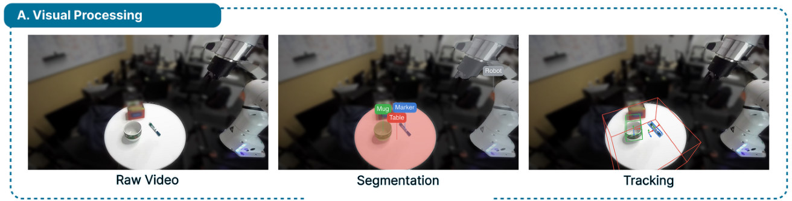
- Segmentation：四个标签对应 object discovery 提出的四个实体。Table 的红色 mask 盖住整张圆桌，Robot 只标了画面上方的夹爪部分。
- Tracking：bowl 上一个绿色小框，pen 上一个蓝色小框，带坐标轴，这是 FoundationPose 的 6-DoF 位姿。还有一个红色大框罩住桌面，颜色和 Table 的 mask 相同，应是桌面的框（推断）。
Running example 在这一步
VLM 在 bowl / pen 这条 episode 里找出 Mug、Marker、Table、Robot。SAM 3 给出四个 mask，SAM 3D 重建出 bowl 和 pen 的 mesh，FoundationStereo 的深度定出尺度，FoundationPose 跟出两者的 6-DoF 轨迹。如果 pen 的 mask 被 mask critic 判为差，流程会退回选关键帧，换一帧再分割（重试次数有上限）。两个 VLM 问题里，地面参考按图应是 Table；被操作的是哪个，论文没写这条 episode 的任务文字（推断）。
Stage 2 Physical-prior inference agent 每个物体的图像 + 名字 → identity、材质、质量、接触属性
- Why：仿真器要质量、材质、接触参数，录像里量不出来，只能先给一个合理的先验（§III-A，和 NeRF2Physics 思路相同）。
- How：一个工具 material_classify（Table I）：VLM 为每个物体估计 identity、材质、质量和接触属性。
- 注意：这些只是先验。论文自己说，框架不做 object-level system identification，也不直接验证物理参数（§V）。
flowchart LR O["物体图像 + 名字
Mug、Marker"] --> M["material_classify
VLM 估计"] M --> P["物理先验
Bowl 陶瓷 0.2 kg
Pen 塑料 0.003 kg"]
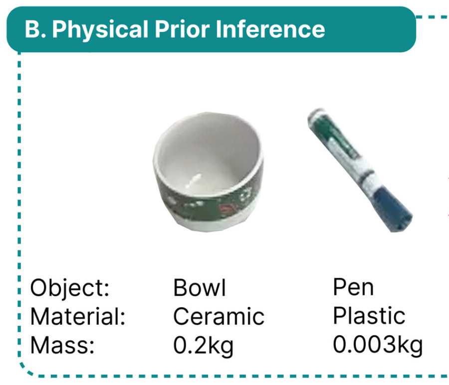
Running example 在这一步
bowl → Bowl / Ceramic / 0.2kg，pen → Pen / Plastic / 0.003kg。名字也被改正了：Stage 1 叫它们 Mug、Marker，这里改成 Bowl、Pen。这些数会写进 MuJoCo 的物体参数，但没有经过测量。
Stage 3 Scene preparation agent episode 文件夹 + 物理先验 → 标定好、装进 MuJoCo 的场景
- Why：相机、机器人底座、物体、轨迹和桌面必须落在同一个坐标系里，否则录下的轨迹放出来，夹爪不在物体上。
- How · 标定：先跑一个确定性的 calibration 子步骤；主相机在预处理时就由 camera_select 选好（Table I、§III-A）。
- How · 底座：把机器人底座的位姿对着 Robot mask 做优化（base-pose optimization）。
- How · 地面：在上游选出的地面参考下方，估计地平面的朝向和偏移（ground_ref）。
- How · 装载 + 决策：把标定好的场景装进 MuJoCo，然后决定下一步走哪条路：对物体平移参数做确定性 sweep，还是交给根据 replay 证据提修正的 VLM 循环（§III-B），两条路都在 Stage 4。
flowchart TD A["calibration
确定性子步骤"] --> B["base-pose 优化
对齐 Robot mask"] B --> G["ground_ref
Table 下的平面
朝向 + 偏移"] G --> L["装进 MuJoCo
桌 + bowl + pen + Franka"] L --> X["选精修路径
sweep 或 VLM 循环"]
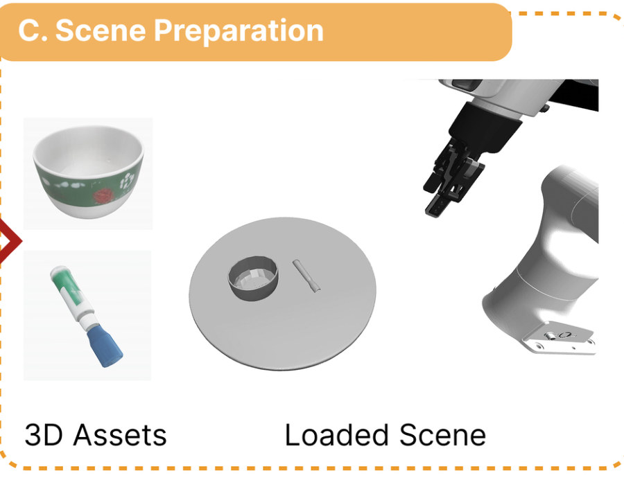
Running example 在这一步
左边两个带纹理的 asset 就是 Stage 1 重建的 bowl 和 pen。右边 Loaded Scene 是装进 MuJoCo 后的样子：灰色圆桌上放着 bowl 和 pen，Franka 底座和夹爪对着 Robot mask 摆正。圆桌就是 ground_ref 估出来的支撑面。
Stage 4 Simulator-in-the-loop grasp optimization agent 装好的场景 + 录下的轨迹 → 能抓住物体的摆放 + 回放视频 + 一批验证过的抓取
- Why：位姿或尺度差一点，录下的轨迹放出来就会把物体“推开”而不是“抓起”。这是论文列的第一种失败（§IV-B Common Failure Modes）。
- How · 确定性 sweep：grasp_sweep 对被操作物体的平移参数取一批候选，在仿真里逐个放录下的轨迹，按接触和抓取结果打分（§III-B）。
- How · VLM 循环：另一条路是给 agent 看渲染的关键帧和结构化的 replay 摘要，由它提出下一次修正，再仿真。
- How · 结果：留下能抓住物体的那个摆放（§III-A）。sweep 里其他验证过的抓取点，后面 Stage 6 的 grasp resampling 还会用到。
flowchart TD L["装好的场景 + 录下的轨迹"] --> S["A · 确定性 sweep
一批物体平移候选
看接触和抓取"] L --> V["B · VLM 循环
渲染关键帧 + replay 摘要
→ 提一个修正"] S --> K["留下抓得住的摆放
Optimized Scene
+ 验证过的抓取点"]:::win V --> K
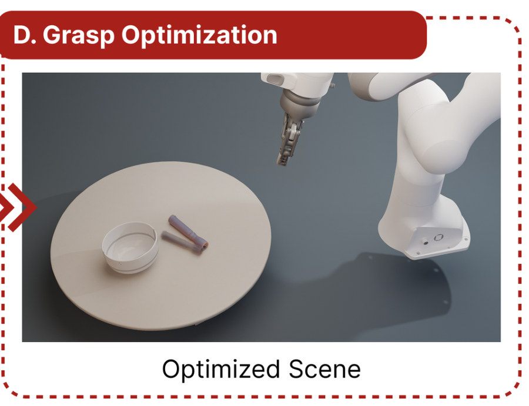
Running example 在这一步
在 Loaded Scene 里，agent 对被操作物体试一批小平移，每次都按录下的 Franka 轨迹仿真一遍，留下夹爪能抓起物体的那个摆放，也就是 Fig. 1 D 的 Optimized Scene。图上 bowl 和 pen 的相对位置看不出挪了多少，论文也没给这条 episode 的平移量和回放分数。
Stage 5 Photorealistic rendering（分层渲染） twin 的仿真状态 + 任意相机位姿 → 照片级的观测帧
- Why：policy 要吃 RGB 观测，和真机比也要看图；MuJoCo 自己的渲染是素色的（Stage 4 的视频）。
- How · 前景：被操作的物体沿用 SAM 3D 生成的纹理，由仿真器渲染 color、depth、alpha 三个通道。
- How · 背景：补全被交互区域挡住的部分，把静态场景重建成 Gaussian splatting，并对齐到 episode 的相机和世界坐标系；同一个相机位姿下渲染背景。
- How · 合成：按深度把两层合起来，得到给 policy 的观测和定性对比用的帧。这套分层做法沿用 RoboSnap（§III-B）。
flowchart LR F["前景（仿真器）
SAM 3D 纹理物体
color + depth + alpha"] --> C["depth-aware 合成"] B["背景（3DGS）
补全遮挡区域
对齐 episode 相机"] --> C C --> O["照片级帧
policy 观测 / 对比"]
Stage 6 Downstream：造数据 + 评测 policy episode twin → 增强后的训练轨迹（微调 π0.5）/ Gym 评测环境
- Why：twin 的价值在于拿来用：不再采真机数据也能多出训练样本，不上真机也能先评 policy（§IV-E）。
- How · 训练轨迹：在 twin 里回放 Stage 4 验证过的抓取 demo，得到同步的合成 exterior + wrist 观测、本体状态和 DROID 约定的动作，不需要再采真机数据。
- How · 四种增强：每个变体都重新仿真、重新渲染，不是改图片。
- object pose randomization：挪物体，用 IK 重算末端轨迹；
- grasp resampling：换成 sweep 里别的验证过的抓取点；
- background replacement：换用别的 episode 的 3DGS 背景；
- camera viewpoint perturbation：扰动相机位姿，两个视角都重渲染。
- How · 微调：增强后的 episode 拿来 fine-tune 预训练的 π0.5，论文没给效果数字。
- How · 评测环境：标定过的 MuJoCo 臂和夹爪放在恢复出的场景坐标系里，物体放在抓取优化后的位姿，15 Hz 位置控制，腕部相机按真机标定放置，提供 Gym 式接口。DROID 预训练的 π0.5 预测绝对关节位置，每个 action chunk 开环执行后再问 policy，所以只在 chunk 粒度上是闭环。
flowchart TD T["episode twin
验证过的抓取 demo"] --> D["回放 → 训练轨迹
ext + wrist 观测
本体状态 + 动作"] D --> A["4 种增强
挪物体、换抓取点
换背景、扰动视角"] A --> FT["fine-tune π0.5"] T --> E["Gym 评测环境
15 Hz 位置控制
π0.5 / π0 闭环跑"]
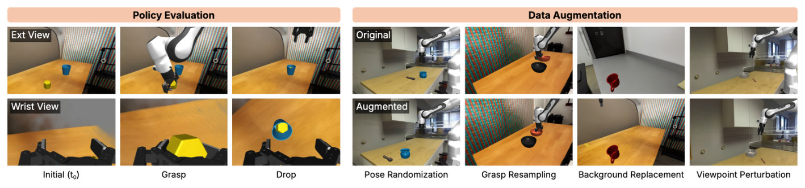
怎么读这张图
- 左半 Policy Evaluation：上行 Ext View、下行 Wrist View，是 policy 的两路合成输入。三列 Initial（t₀）、Grasp、Drop：黄色方块被夹起，丢进蓝杯。木桌和彩色条纹墙就是 Stage 5 的 3DGS 背景。
- 右半 Data Augmentation，每列一种：Pose Randomization 里蓝杯和工具换了位置；Grasp Resampling 里同一个 bowl 换了抓的位置；Background Replacement 把灰色房间背景换成木桌；Viewpoint Perturbation 是同一场景换了相机角度。
Running example 在这一步
bowl / pen 的 twin 也可以这样用：在 twin 里回放它的抓取 demo 得到一条训练轨迹，再挪 pen 的位置、换 sweep 里别的抓取点、换背景、换视角，各生成一条新 demo。论文 Fig. 6 展示的是别的 episode，没有给这条的增强结果。
贯穿全程 Episode contract + critics + 可换的 VLM 与 adapter 每个 VLM 决定 → 工具执行 → critic 检查 → 写进 episode 文件夹；换 adapter 换工具，contract 不变
- Why：同一个 Gemma 不走这套 workflow，直接当 coding agent 用，3 条里 0 条成功（E4）。走这套 workflow，四个不同的 VLM 成功数都差不多（E3）。差别在 workflow，不在模型。
- How · VLM 只做小决定：object discovery、关键帧和 mask 的取舍（retry 次数有上限）、replay 精修的选择，都是范围有限、输出有 schema 的问题。VLM 不生成几何，也不模拟物理（§IV-C）。
- How · critic：mask critic 拒绝后打回选关键帧；scale_critic 查 mesh 尺度；tracking critic 记录位姿质量，可要求换初始化帧（§III-B）。
- How · 可换后端：harness 用 LangChain，prompts / skills 和 tools 分层，换 VLM 不需要逐个模型调参（§III-A、§IV-C）。
- How · adapter：同一个 episode contract、同一个 agentic workflow，只换领域专用的 skills 和 tools，不把所有 episode 都塞进刚体表示（§III-C）。
- deformable（PhysTwin / EMPM 设定）：刚体位姿跟踪换成跟踪几何以及 point、particle、spring 或材料状态，用仿真 rollout 检查恢复的参数能否复现观测到的形变；
- humanoid（BFM-Zero 风格）：以物体为中心的 scene preparation 换成 motion-context retrieval、按本体初始化，再对 retarget 后的参考动作做闭环回放。
flowchart TD Q["VLM：小而有 schema 的决定
要哪些物体、用哪帧
mask 留不留、地面是谁"] --> T["专用工具执行
SAM 3、SAM 3D
FoundationStereo、FoundationPose"] T --> C["critic
mask / scale / tracking"] C -->|通过| F["写进 episode 文件夹
下一个 agent 只读它"]:::win C -->|不通过，有限次| Q F --> A["换 adapter，contract 不变
rigid、deformable、
humanoid"]
Recap：例子覆盖了论文的哪些 idea
| 论文里的 idea | 例子里在哪体现 |
|---|---|
| 四个 agent 接力，agent 做判断、工具做重活（§III-A，Table I） | Level 1 的 Fig. 1：A → B → C → D |
| Visual processing：object discovery、SAM 3、SAM 3D、FoundationStereo、FoundationPose（§III-B） | Stage 1：Mug / Marker / Table / Robot 的 mask、mesh、6-DoF 框 |
| Critic + 有限次 retry（§III-B） | Stage 1：pen 的 mask 不好时退回选关键帧；stage-all |
| Physical prior inference（§III-A） | Stage 2：Bowl 陶瓷 0.2 kg，Pen 塑料 0.003 kg |
| Scene preparation：标定、底座、地面、装进 MuJoCo（§III-B） | Stage 3：Loaded Scene，Table 当地面 |
| Simulator-in-the-loop grasp optimization：sweep 或 VLM 循环（§III-B） | Stage 4：Optimized Scene |
| 分层的照片级渲染，沿用 RoboSnap（§III-B） | Stage 5（论文没给这条的画面），E2 的 Fig. 3 |
| 同一 contract 的 deformable / humanoid adapter（§III-C） | stage-all，延伸到 E5 的玩偶和 G1 |
| VLM 后端可换，开源 31B 便宜 31.4 倍（§IV-C） | stage-all，E3 |
| 下游：四种增强 + 微调 π0.5，Gym 评测（§IV-E） | Stage 6，E7 |
| 换平台（AIRBOT）、sim 代替真机评测（§IV-E） | E6、E8（不在这个例子上） |
| 主结果：DROID-500 回放成功 48.4%（§IV-B） | E1（这条 episode 的单独分数论文没给） |
Results
DROID 上约一半能转成可回放的 twin；VLM 换成开源 31B 成功数不降、花费只有约 3%；twin 里测的 policy 成功率和真机相关 r = 0.920
顺序同论文 §IV：E1 500 条能转成几条 → E2 外观和 RoboSnap 比 → E3 换 VLM 后端 → E4 不要 workflow 行不行 → E5 deformable 和 humanoid → E6 换机器人平台 → E7 造数据和跑 policy → E8 能否代替真机评测。比的是回放成功率和模型账单（钱），没有比运行时间。只有 E1、E3、E4、E8 有数字，其余是定性展示。论文也没做 actor–critic 消融，说是沿用 SceneSmith、SceneWeaver 的结论（§IV 开头）。
E1随机抽 500 条 DROID episode，能转成可回放 twin 的有几条？§IV-B
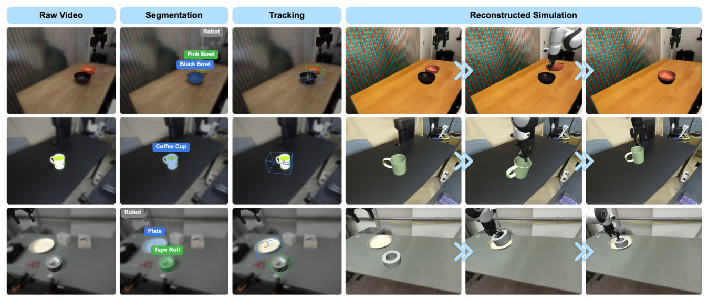
| 回放结果（Gemma 4 31B） | 条数 | 占 500 条 |
|---|---|---|
| 成功（最高分 ≥ 8/10） | 242 | 48.4% |
| 部分（7/10） | 28 | 5.6% |
| 失败（≤ 6/10 或没有有效记录） | 230 | 46.0% |
| 349 条能产出可评产物的 episode：PSNR 14.069，SSIM 0.650，ADD-S 107 mm | ||
这张表是按 §IV-B 正文里的数字整理的，论文没有对应的表。
- 说明什么
- 规模化能跑，成功率约一半。500 条里成功 242 条（48.4%），部分 28 条，失败 230 条。没有 baseline 在这 500 条上对比。失败原因（§IV-B）：物体被推开而不是被抓起；分割或 mesh 重建不完整（关键物体没分出来、选错物体、一个 mesh 合并了两个以上物体）；初始位置、尺度或朝向错，抓不住；画面杂乱、遮挡、光线暗都会让转换更不可靠。
- 在故事里
- 贡献 (1)：可复现的 agentic real2sim 能批量把 DROID 录像转成 MuJoCo twin；也老实交代了上限。
- 指标
- Replay success：每条 episode 一个 0/1 标记（论文记作 re），由三个裁判模型判定：GPT-5.5、Claude Opus 4.7、Gemini 3.5 Flash，特意不和 pipeline 后端重合。
- 每个裁判给每个候选打 10 分制：认错目标物体扣最多 4 分，物体终点错扣 3 分，动作做错扣 2 分，夹爪终点错扣 1 分；起始位姿漂移只记录不扣分。≥ 8 算过，7 算部分，≤ 6 算失败。
- 只要有一个裁判给自己选出的最好候选打到 ≥ 8，这条就算成功；没有有效裁判记录算失败。
- PSNR、SSIM 是整帧视觉保真度；ADD-S 是位姿轨迹误差，单位 mm，越小越好。三项只在 349 条可评的 episode 上算。
- 怎么评测
- 随机抽 500 条 DROID 操作 episode，覆盖不同物体、视角、遮挡和动作（pick / place / take / remove）。中途停下、没产出有效回放记录的也留在分母里。
- 候选来自最新一次 grasp sweep：probe 判为抓起、有回放视频、抬升和位移统计有限且在宽松范围内，才有资格。最多 5 个候选送给裁判，按物体峰值位移排序。
- 每条取的是最多 5 个候选里裁判看来最好的那个，判定偏宽松（推断）。这 500 条的结果有没有人工复核，论文没写；E3 的 100 条写了“further validated by a human assessor”。
E2和同期的 RoboSnap 比，重建的场景看起来怎样？§IV-B Qualitative
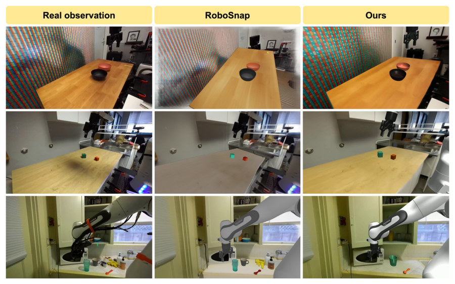
- 说明什么
- 外观相当，各有胜负，只有定性对比。上、中两行本文纹理和位姿“略好”；下行 RoboSnap 的杯子位姿和形状更接近真值（作者原话）。
- 在故事里
- 说明分层渲染（Stage 5，本身借自 RoboSnap）加上本文的流水线，外观不输专做单图场景重建的方法。
- 指标
- 没有数字，只靠看图。
- 怎么评测
- DROID 里的三个静态场景。
- RoboSnap 怎么跑的（输入哪张图、是否接机械臂），论文没写。
E3换 VLM 后端，成功率和花费怎么变？§IV-C · Fig. 4
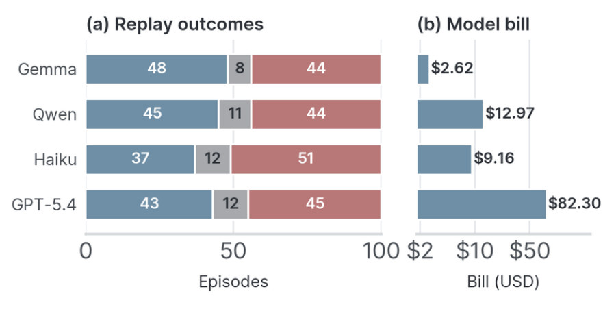
- 说明什么
- 成功数差不多，钱差 31 倍，开源模型最好也最便宜。100 条子集上：Gemma 4 31B 成功 48、部分 8、失败 44，账单 $2.62；Qwen 3.6 35B 45 / 11 / 44，$12.97；Claude Haiku 4.5 37 / 12 / 51，$9.16；GPT-5.4 43 / 12 / 45，$82.30。相对 Gemma 的账单，Claude 贵 3.5 倍，Qwen 贵 5.0 倍，GPT-5.4 贵 31.4 倍。
- 在故事里
- 贡献 (2)：VLM 只负责有范围的决定，所以选后端基本只是选价钱。四个后端都低于 50%，说明剩下的提升空间主要在上游的视觉和仿真组件，不在 VLM（§IV-C）。
- 指标
- 同 E1 的 replay success，先由裁判模型判，再由一位人工评估者复核。账单是每个模型在这套配置下跑 100 条的 API 费用。
- 怎么评测
- 同一套 pipeline 配置，部分 agent 步骤开 reasoning，只换 VLM；四个后端都跑 DROID 的同一个 100 条子集。
- 每个后端跑几次，论文没写。后端里没有 GPT-5.5 和 Claude Opus 4.7：这两个被拿去当了裁判。
E4不要这套 workflow，同一个 Gemma 直接当 coding agent，能转成吗？§IV-C One-prompt agent baseline
| 方法（同为 Gemma 4 31B） | 3 条 DROID episode | 失败表现 |
|---|---|---|
| Agentic Real2Sim | 3 / 3 成功（选题条件） | — |
| Codex 里的 one-prompt agent，60 min，一次尝试 | 0 / 3 交付可运行 twin | scene XML 无效、replay 报错、任务物体不动、机器人状态不稳 |
这张表是按 §IV-C 正文整理的，论文没有对应的表或图。
- 说明什么
- 同一个模型，没有 stage、工具和 skill，就交付不出能跑的 twin。三次都在 60 min 内结束，但一个完整、可运行的 episode twin 都没交付。
- 在故事里
- 把 workflow 的作用和 VLM 的能力分开：E3 说明换 VLM 影响不大，E4 说明去掉 workflow 影响很大。
- 指标
- 是否交付一个完整、可运行的 episode twin（是 / 否）。
- 怎么评测
- 挑的是 Gemma + Agentic Real2Sim 已经转成功的 3 条，所以任务本身做得到。
- 每条一次独立尝试，从空 Python 环境开始；给图像、机器人轨迹、标定、机器人 asset，加统一的任务 prompt 和输出约定。最多 60 min，可以装依赖、调工具、改代码，但不给 AR2S 的 stage、工具和 skill。
- 只有 3 条、每条 1 次，样本很小。
E5同一个 contract 能不能转 deformable 和 humanoid？§IV-D · Fig. 5
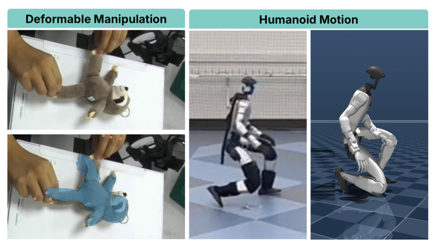
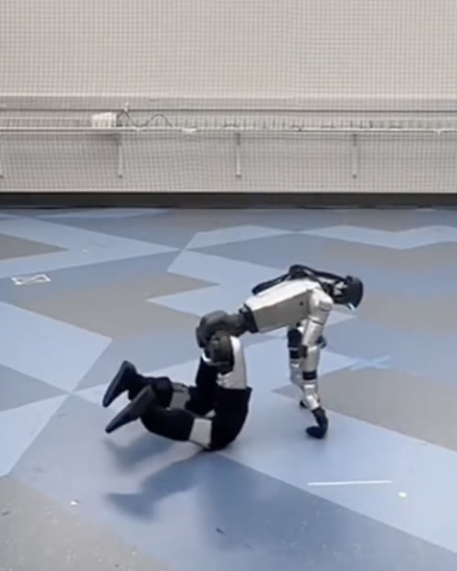
- 说明什么
- 能跑通，但只有定性对比。deformable：PhysTwin 式 episode，包括 rope、cloth、plush、soft packages、elasto-plastic 材料。humanoid：Unitree G1 的 locomotion 和短的全身动作（从 LAFAN1 retarget），包括站、跪、短距离行走。
- 在故事里
- 支撑“一个框架横跨通常要分开做的 Real2Sim 领域”（摘要、§III-C）。
- 指标
- 没有数字。deformable 看恢复的材料响应是否跟上可见的弯曲、拉伸和接触顺序；humanoid 看大体姿态、平衡和动作相位是否一致。
- 怎么评测
- 转了多少条 episode，论文没写。
- humanoid 的仿真画面是在调过控制器的 joint-level gains、使其在闭环仿真里跟住参考轨迹之后拍的（Fig. 5 图注）。
E6换一台 DROID 里没有的机器人（AIRBOT Play），流水线还能用吗？§IV-E Custom scene conversion
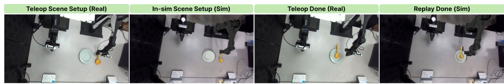
- 说明什么
- 能跑通，只需要换机械臂的 MuJoCo 模型。把录像打包成 DROID 的 episode 格式后，流水线从 object discovery 到抓取优化端到端跑通；twin 里 AIRBOT 按录下的关节轨迹抓起木勺、抬起、放下，复现真机的结局。
- 在故事里
- 贡献 (3)：custom scene conversion，说明 contract 不绑定 DROID 和 Franka。
- 指标
- 没有数字，只看一条 episode 的首尾帧。
- 怎么评测
- 硬件：AIRBOT Play 6-DoF 臂 + AIRBOT G2 二指夹爪，一台外置 ZED 2i 双目相机（校正后的立体对，2208 × 1242，15 Hz），同时记录关节位置和夹爪开度；相机到底座的变换来自一次性的工位标定。
- 人通过 VR 头显遥操作。唯一和本体相关的改动：用厂商 URDF 转出的 MuJoCo 模型替换默认的 DROID Franka。
- 不一致：正文和图注说任务是把勺子从盘子里拿出来放到桌上（“move-spoon-to-table”），但 Fig. 7 上行里勺子是从盘子旁边移进了盘子。论文没解释。
E7twin 能拿来造训练数据、跑 policy 吗？§IV-E Data augmentation, in-sim training and evaluation
- 说明什么
- 流程跑通了，但论文没给数字。Fig. 6（见 Stage 6）左边是 π0.5 在 twin 里找到目标、抓起、丢进杯子；右边是四种增强各一组原图和增强后的对比。增强后的 episode 拿来 fine-tune π0.5，但没有报告 fine-tune 前后的成功率。
- 在故事里
- 贡献 (3) 的“data generation through augmentation”：twin 暴露完整的仿真状态，所以可以做在固定录像上很难做的增强。
- 指标
- 论文没报。
- 怎么评测
- 评测环境：恢复出的场景坐标系里放标定过的 MuJoCo 臂和夹爪，物体放在抓取优化后的位姿，15 Hz 位置控制，腕部相机按真机标定放置，提供 Gym 式接口。
- π0.5 输入合成的 exterior 和 wrist RGB、关节和夹爪状态、自然语言任务描述，输出绝对关节位置的 action chunk，开环执行后再查询。
E8在 twin 里测出的 policy 成功率，能代替真机评测吗？§IV-E Substituting real-world evaluation · Fig. 7
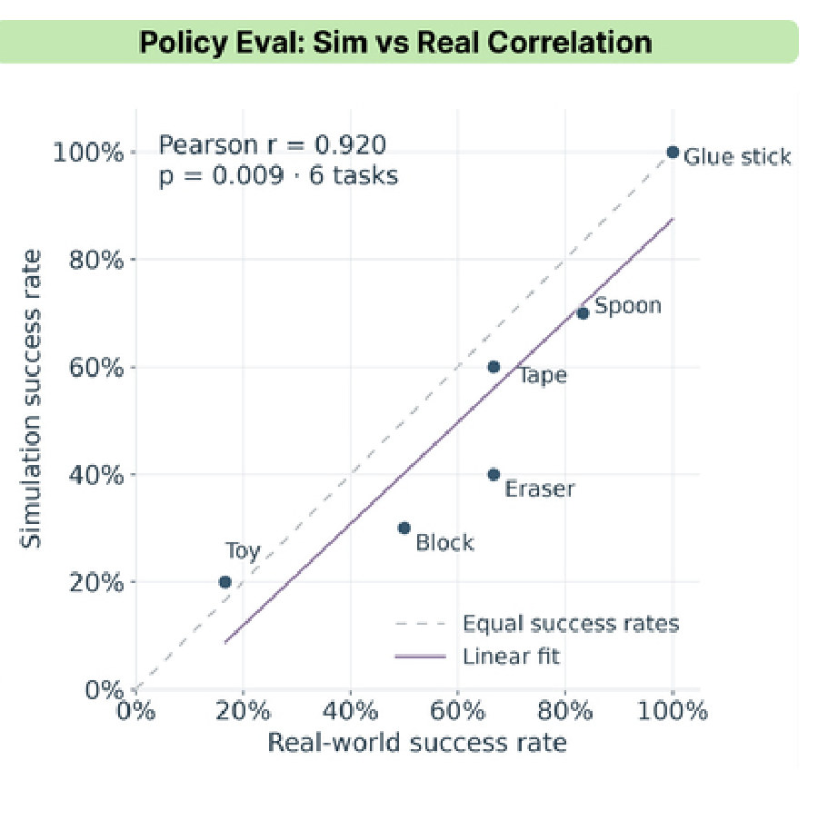
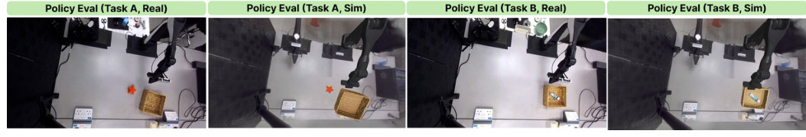
- 说明什么
- 任务难易的排序基本一致：Pearson r = 0.920（p = 0.009，6 个任务）。绝对成功率不完全相同。按图读数（约值）：Glue stick 真机 100% / 仿真 100%，Spoon 约 83% / 70%，Tape 约 67% / 60%，Eraser 约 67% / 40%，Block 50% / 30%，Toy 约 17% / 20%。多数点在虚线下方，仿真偏难（读图所得，推断）。
- 在故事里
- 贡献 (3) 的最后一环：twin 可以当真机前的筛选关，先比较 policy 变体、估计真机表现，再上真机。
- 指标
- 每个任务的成功率，仿真和真机各一个，再算 Pearson 相关。每个任务的成功判据和试验次数，论文都没写。
- 怎么评测
- π0 只用真机演示 fine-tune，从没见过 twin 生成的数据，所以两边一致不能归因于训练时见过仿真环境。
- 6 个留出的 pick-and-place 任务和它们重建出的 twin；仿真里是 policy 在线闭环执行，不是回放真机轨迹。
- 下行画面和 E6 是同一个俯视相机和工位，应是同一套 AIRBOT 平台（推断，论文没明说）。只有 6 个点，相关系数的不确定性不小。
Limits
局限和开放问题
- 成功率不到一半：DROID-500 上 48.4%，作者自己说转换成功率“还有很大提升空间”（§V）。四个后端都低于 50%，瓶颈在上游的视觉和仿真组件（§IV-C）。
- 物理参数没验证：不做 object-level system identification，也不直接验证物理参数，因为每条录像能提供的物体交互证据有限（§V）。Bowl 0.2 kg 这类数是 VLM 给的先验。
- 抓取优化是“挪物体去迁就轨迹”：留下的是“能抓住”的摆放，不一定是真实位置，挪了多少论文没报（推断）。平均 ADD-S 107 mm（§IV-B），说明位姿误差本身不小。
- 主要靠 VLM 裁判：rubric 是自定的，每条取最多 5 个候选里最好的那个；只有 E3 写了人工复核。critic 和 retry 各贡献多少，没有消融（§IV 开头）。
- 不少结论只有定性展示：deformable、humanoid、AIRBOT 换平台、增强后微调 π0.5 都没给数字；sim-vs-real 只有 6 个任务，试验次数没写。
- 文字和图不一致：E6 的任务方向（勺子出盘还是进盘），正文和 Fig. 7 相反。
For Agent-centric real-to-sim
对我们有什么用
- 给 real2sim-anything-indoor 和 WorldClaw 定一个 episode contract，把 VLM 的活切小：VLM 只回答有 schema 的小问题（要哪些物体、用哪帧、mask 留不留、地面是谁），重活交给 SAM 3 / SAM 3D / FoundationStereo / FoundationPose，关键处加 critic 和 retry 上限。这样开源的 Gemma 4 31B 跑 100 条只要 $2.62，成功数还最高（E3）。E4 的 Codex one-prompt 0/3，也支持 WorldClaw 走“skills + 固定流程”而不是一个大 prompt。
- 人体动作可以当成一个 adapter：它的 humanoid adapter 做 motion-context retrieval、按本体初始化、对 retarget 后的参考动作做闭环回放，并调 joint-level gains 去跟住参考。这正对应我们把 GVHMR 人体动作放进 Blender 房间的那一步，可以把“闭环回放能否跟住参考动作”当验收。
- 两种验收办法可以直接借：(1) 三个不同厂商的 VLM 当裁判，用扣分 rubric 判 replay（认错物体 −4、终点错 −3、动作错 −2、夹爪错 −1，≥ 8 算过），再加人工复核；(2) 同一个 policy 在 twin 和真机上各测一遍，看成功率的排序相关（这里 r = 0.920）。我们的 Blender / Genesis 场景都缺一个这样的验收数字。